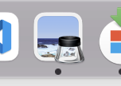
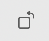
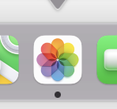

Як повернути зображення на мак
При роботі в фото часто необхідно змінити орієнтацію фото з вертикального на горизонтальне або навпаки, або просто повернути/перевернути фото. Це можна зручно зробити за допомогою вбудованих програм редакторів зображень на мак.
Повернути фото в програмі "Оглядач"
Всі фото на мак за замовченням відкриваються в програмі "Оглядач". В цій програмі ви можете не тільки переглянути фото, але й відредагувати його.
Для того щоб повернути фото в програмі "Оглядач" - натисніть кнопку "Повернути вліво".  Зображення повернеться на 90 градусів при кожному натисканні.
Повернути фото в програмі "Фотографії"
Програма Фотографії також є стандартною вбудованою програмою на мак для перегляду та редагування фотографій.
Щоб повернути зображення відкрийте зображення в програмі "Фотографії". 
Натисніть на меню "Повернути проти годинникової стрілки" , зображення повернеться на 90 градусів.
Читайте більше статей про редагування зображень на сторінці Робота з зображеннями на мак